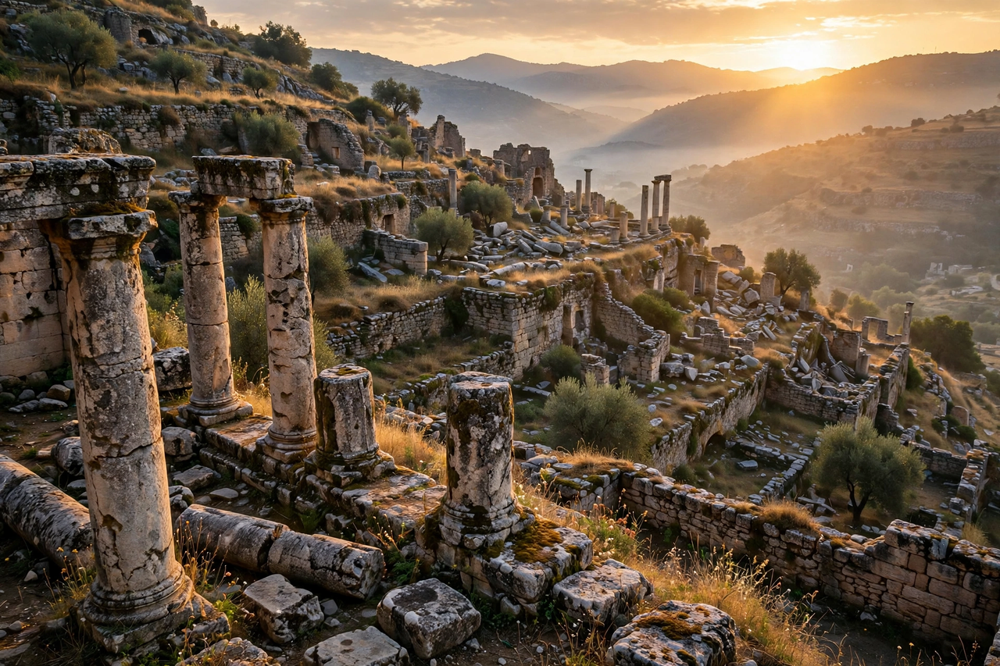

Introduction
History is the study and documentation of the past, drawing on written records, archaeology, oral tradition and material evidence. Events before the invention of writing systems are considered prehistory. Historians use sources such as government and institutional records, newspapers, letters, diaries, oral accounts and artefacts to build narratives of past societies, and debate how and why events unfolded.
The discipline spans the history of particular places, peoples, wars, ideas and everyday life, from ancient history through the Middle Ages and the modern era to contemporary history.
Selected article

[Image: ruins of an ancient stone city on a hillside at sunrise]The Roman Empire was the post-republican state of ancient Rome, conventionally dated from 27 BC, when Octavian became Augustus, to AD 476 in the West. At its height under Trajan it stretched from Britain to Mesopotamia and governed tens of millions of people. Its law, engineering, language and institutions profoundly shaped Europe, North Africa and the Near East, and its fall in the West remains one of history's most debated transitions.
Did you know...
- ... that the Great Wall of China was built and rebuilt by successive dynasties over more than a thousand years?
- ... that movable-type printing helped spread books and ideas rapidly across Europe in the 15th century?
- ... that the Rosetta Stone provided the key to deciphering Egyptian hieroglyphs?
Major topics
- By period: Ancient Egypt · Ancient Greece · Roman Empire · Byzantine Empire · Renaissance · Enlightenment · Industrial Revolution
- Conflicts: World War I · World War II · Cold War · American Civil War
- Themes: History of science · History of technology · Economic history · Social history
Selected biography
Abraham Lincoln (1809–1865) was the 16th president of the United States, leading the country through the American Civil War, preserving the Union, and issuing the Emancipation Proclamation. He was assassinated in 1865, shortly after the war's end.
Categories
History by period · History by region · Empires · Wars · Historians · Archaeology · Historical documents · Timelines